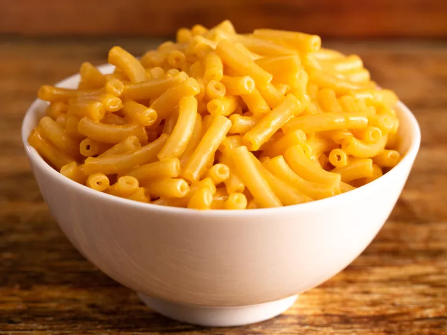

Mac & Cheese

Description
This is the classic Mac and Cheese that some used to call Cheese and Macaroni. You could try and get really fancy and add hot dogs, spam, or a can of chili, but today we sticking to the classic mac and cheese.
Ingredients
- 1 box Kraft Mac & Cheese
- 6 cups water
- 4 Tbsp. butter
- 1/4 cup milk
- Bring water to a boil in a medium saucepan.
- Stir in macaroni and cook for 11 or 12 minutes.
- Drain water with a colander, and return to pan.
- Add butter, milk, and cheese packet and mix well.